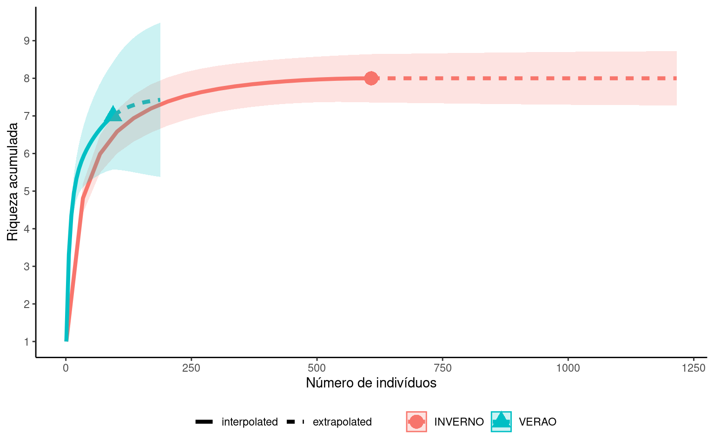

Capítulo 2 Medindo as diversidades \(\alpha\), \(\beta\) e \(\gamma\): tutorial no R
Neste tutorial iremos utilizar uma base de dados denominada Baia_santos.xlsx, contendo a abundância de \(10\) espécies de peixes capturadas na zona de arrebentação da Baía de Santos em \(2015\). Cada linha da tabela representa uma amostra, isto é, um arrasto feito ao longo de \(200\) m na zona de arrebentação, seguindo a direção da linha da costa. No total foram \(12\) amostras. A primeira coluna identifica em que período do ano cada amostra foi obtida. As primeiras 6 foram tomadas no VERAO de \(2015\) e as outras 6 no INVERNO de \(2015\). As demais colunas mostram o número de indivíduos de cada espécie nas amostras. Os nomes das espécies foram omitidos para facilitar a apresentação dos dados.
Vamos utilizar esta tabela como exemplo para calcularmos as diversidades \(\alpha\), \(\beta\) e \(\gamma\).
2.1 Preparando o ambiente de trabalho
Os cálculos serão feitos no programa R. Antes de iniciar, é importante preparar seu ambiente de trabalho. Iremos utilizar o R-Studio como ambiente de programação, mas você pode utilizar outro editor de sua preferência. A seguir faremos toda a preparação necessária, mas pode ser útil consultar os links abaixo:
- Após abrir o R-Studio e criar um arquivo, direcione o R para o diretório onde você irá inserir seus dados. Por exemplo:
setwd('C:/Users/Usuario/Documents/Bio_II_2021' )Faça o download da base de dados que iremos utilizar e salve dentro do diretório que você selecionou acima. O arquivo é do tipo .xlsx e está disponível para download no link Baia_santos.xlsx
Caso ainda não tenha feito, instale os segintes pacotes com o comando abaixo:
install.packages(c('readxl', 'tidyverse', 'vegan', 'patchwork', 'iNEXT'))- Habilite os pacotes
library(readxl)
library(tidyverse)
library(vegan)
library(patchwork)
library(iNEXT)Os pacotes precisam ser instalados somente uma vez. No entanto, sempre que você fechar e abrir o R-Studio, precisará habilitá-los novamente.
- Importe a base de dados para o R-Studio
pe = read_excel('Baia_santos.xlsx')Após importar visualize a tabela:
View(pe)| Epoca | sp_1 | sp_2 | sp_3 | sp_4 | sp_5 | sp_6 | sp_7 | sp_8 | sp_9 | sp_10 |
|---|---|---|---|---|---|---|---|---|---|---|
| INVERNO | 5 | 6 | 72 | 65 | 8 | 6 | 1 | 0 | 0 | 0 |
| INVERNO | 6 | 0 | 1 | 18 | 9 | 12 | 0 | 1 | 0 | 0 |
| INVERNO | 7 | 0 | 0 | 48 | 2 | 0 | 0 | 4 | 0 | 0 |
| INVERNO | 0 | 0 | 0 | 13 | 4 | 1 | 0 | 0 | 0 | 0 |
| INVERNO | 2 | 0 | 143 | 48 | 1 | 0 | 0 | 1 | 0 | 0 |
| INVERNO | 0 | 0 | 95 | 28 | 0 | 0 | 1 | 0 | 0 | 0 |
| VERAO | 1 | 0 | 0 | 8 | 0 | 27 | 0 | 0 | 1 | 0 |
| VERAO | 0 | 0 | 0 | 1 | 3 | 2 | 2 | 0 | 0 | 0 |
| VERAO | 8 | 0 | 0 | 1 | 4 | 6 | 0 | 0 | 4 | 0 |
| VERAO | 2 | 0 | 0 | 0 | 6 | 2 | 0 | 0 | 0 | 0 |
| VERAO | 1 | 0 | 0 | 3 | 0 | 2 | 0 | 0 | 1 | 0 |
| VERAO | 1 | 0 | 0 | 0 | 0 | 7 | 0 | 0 | 0 | 1 |
E verifique se as colunas foram lidas corretamente digitando o comando abaixo:
glimpse(pe)## Rows: 12
## Columns: 11
## $ Epoca <chr> "INVERNO", "INVERNO", "INVERNO", "INVERNO", "INVERNO", "INVERNO"…
## $ sp_1 <dbl> 5, 6, 7, 0, 2, 0, 1, 0, 8, 2, 1, 1
## $ sp_2 <dbl> 6, 0, 0, 0, 0, 0, 0, 0, 0, 0, 0, 0
## $ sp_3 <dbl> 72, 1, 0, 0, 143, 95, 0, 0, 0, 0, 0, 0
## $ sp_4 <dbl> 65, 18, 48, 13, 48, 28, 8, 1, 1, 0, 3, 0
## $ sp_5 <dbl> 8, 9, 2, 4, 1, 0, 0, 3, 4, 6, 0, 0
## $ sp_6 <dbl> 6, 12, 0, 1, 0, 0, 27, 2, 6, 2, 2, 7
## $ sp_7 <dbl> 1, 0, 0, 0, 0, 1, 0, 2, 0, 0, 0, 0
## $ sp_8 <dbl> 0, 1, 4, 0, 1, 0, 0, 0, 0, 0, 0, 0
## $ sp_9 <dbl> 0, 0, 0, 0, 0, 0, 1, 0, 4, 0, 1, 0
## $ sp_10 <dbl> 0, 0, 0, 0, 0, 0, 0, 0, 0, 0, 0, 1Você deve ver uma saída parecida com esta. Verifique se Epoca aparece com o símbolo <chr>, indicando que é uma variável categórica e se todas as demais aparecem com o símbolo <dbl>, indicando que são variáveis quantitativas. Caso alguma variável (exceto Epoca) apareça como <chr> você deve verificar em sua base de dados se existe algum caracter não numérico nas colunas das espécies.
2.2 Diversidade \(\alpha\)
A diversidade \(\alpha\) se refere às diversidades registradas localente, isto é, em cada uma das amostras. Após obtermos estas medidas, nos interessa entender qual é a diversidade média. Como dissemos no capítulo anterior, a diversidade pode ser caracterizada pela riqueza de espécies, equabilidade (ou uniformidade) ou um índice de diversidade. A riqueza refere-se simplesmente ao número de espécies em uma amostra. Se contarmos o número de espécies presentes na primeira linha da tabela por exemplo, encontraremos \(7\) espécies (sp_1, sp_2, sp_3, sp_4, sp_5, sp_6, sp_7). Já na última amostra encontramos somente \(3\) espécies (sp_1, sp_6, sp_10).
A equabilidade se refere ao padrão de distribuição das abundâncias relativas. Se todas as espécies forem igualmente abundantes, a equabilidade é máxima. Por outro lado, se uma ou poucas espécies são muito abundantes e todas as demais raras (compostas por poucos indivíduos), a uniformidade é baixa (= dominância alta). Na linha \(3\) por exemplo, uma das espécies é composta por \(48\) individuos, enquanto a segunda espécie mais abundante apareceu com somente \(7\). Esta amostra possui elevada dominância.
Finalmente, os índices de diversidade combinam a riqueza de espécies e a equabilidade para nos fonecer uma medida-resumo para as comunidades locais.
Como temos amostras tomadas em dois períodos nos interessa comparar estes períodos em função das medidas de diversidade nas diferentes escalas.
| Epoca | sp_1 | sp_2 | sp_3 | sp_4 | sp_5 | sp_6 | sp_7 | sp_8 | sp_9 | sp_10 |
|---|---|---|---|---|---|---|---|---|---|---|
| INVERNO | 5 | 6 | 72 | 65 | 8 | 6 | 1 | 0 | 0 | 0 |
| INVERNO | 6 | 0 | 1 | 18 | 9 | 12 | 0 | 1 | 0 | 0 |
| INVERNO | 7 | 0 | 0 | 48 | 2 | 0 | 0 | 4 | 0 | 0 |
| INVERNO | 0 | 0 | 0 | 13 | 4 | 1 | 0 | 0 | 0 | 0 |
| INVERNO | 2 | 0 | 143 | 48 | 1 | 0 | 0 | 1 | 0 | 0 |
| INVERNO | 0 | 0 | 95 | 28 | 0 | 0 | 1 | 0 | 0 | 0 |
| VERAO | 1 | 0 | 0 | 8 | 0 | 27 | 0 | 0 | 1 | 0 |
| VERAO | 0 | 0 | 0 | 1 | 3 | 2 | 2 | 0 | 0 | 0 |
| VERAO | 8 | 0 | 0 | 1 | 4 | 6 | 0 | 0 | 4 | 0 |
| VERAO | 2 | 0 | 0 | 0 | 6 | 2 | 0 | 0 | 0 | 0 |
| VERAO | 1 | 0 | 0 | 3 | 0 | 2 | 0 | 0 | 1 | 0 |
| VERAO | 1 | 0 | 0 | 0 | 0 | 7 | 0 | 0 | 0 | 1 |
Vamos adicionar ao final da tabela pe três colunas, uma com a riqueza de espécies (\(S\)), uma com o índice de diversidade de Simpson (\(D\)) e outra com a equabilidade de Simpson (\(E\)). Desta forma teremos as três medidas de diversidade relevantes em nossa discussão.
pe = pe %>%
rowwise() %>%
mutate(S = specnumber(c_across(sp_1:sp_10)),
D = diversity(c_across(sp_1:sp_10),
index = 'invsimpson')) %>%
mutate(E = D/S)Ao digitar a tabela novamente veremos as três novas colunas, mostrando que para cada amostra foi calculado um valor de \(S\), \(D\) e \(E\).
View(pe)| Epoca | sp_1 | sp_2 | sp_3 | sp_4 | sp_5 | sp_6 | sp_7 | sp_8 | sp_9 | sp_10 | S | D | E |
|---|---|---|---|---|---|---|---|---|---|---|---|---|---|
| INVERNO | 5 | 6 | 72 | 65 | 8 | 6 | 1 | 0 | 0 | 0 | 7 | 2.775990 | 0.3965700 |
| INVERNO | 6 | 0 | 1 | 18 | 9 | 12 | 0 | 1 | 0 | 0 | 6 | 3.763203 | 0.6272005 |
| INVERNO | 7 | 0 | 0 | 48 | 2 | 0 | 0 | 4 | 0 | 0 | 4 | 1.568057 | 0.3920143 |
| INVERNO | 0 | 0 | 0 | 13 | 4 | 1 | 0 | 0 | 0 | 0 | 3 | 1.741936 | 0.5806452 |
| INVERNO | 2 | 0 | 143 | 48 | 1 | 0 | 0 | 1 | 0 | 0 | 5 | 1.670768 | 0.3341535 |
| INVERNO | 0 | 0 | 95 | 28 | 0 | 0 | 1 | 0 | 0 | 0 | 3 | 1.567380 | 0.5224601 |
| VERAO | 1 | 0 | 0 | 8 | 0 | 27 | 0 | 0 | 1 | 0 | 4 | 1.722013 | 0.4305031 |
| VERAO | 0 | 0 | 0 | 1 | 3 | 2 | 2 | 0 | 0 | 0 | 4 | 3.555556 | 0.8888889 |
| VERAO | 8 | 0 | 0 | 1 | 4 | 6 | 0 | 0 | 4 | 0 | 5 | 3.977444 | 0.7954887 |
| VERAO | 2 | 0 | 0 | 0 | 6 | 2 | 0 | 0 | 0 | 0 | 3 | 2.272727 | 0.7575758 |
| VERAO | 1 | 0 | 0 | 3 | 0 | 2 | 0 | 0 | 1 | 0 | 4 | 3.266667 | 0.8166667 |
| VERAO | 1 | 0 | 0 | 0 | 0 | 7 | 0 | 0 | 0 | 1 | 3 | 1.588235 | 0.5294118 |
Para manter a notação simples, estamos utilizando a simbologia \(D\) mas, extritamente falando, o argumento
index = 'invsimpson'calcula a recíproca do índice de Simpson (\(1/D\)). Deste modo valores mais altos são associados à comunidades mais diversas.
Para compararmos a diversidade \(\alpha\) entre os períodos de VERAO e INVERNO vamos fazer um boxplot e sobrepor um gráfico de dispersão.
plt_D = ggplot(pe) +
aes(x = Epoca, y = D) +
geom_boxplot(fill = 'lightblue', alpha = 0.5) +
geom_jitter(width = 0.1, size = 3) +
labs(y = 'Diversidade de Simpson (1/D)',
x = '') +
theme_classic()
plt_S = ggplot(pe) +
aes(x = Epoca, y = S) +
geom_boxplot(fill = 'lightblue', alpha = 0.5) +
geom_jitter(width = 0.1, size = 3) +
labs(y = 'Riqueza de Espécies (S)',
x = '') +
theme_classic()
plt_E = ggplot(pe) +
aes(x = Epoca, y = E) +
geom_boxplot(fill = 'lightblue', alpha = 0.5) +
geom_jitter(width = 0.1, size = 3) +
labs(y = 'Equabilidade de Simpson (E)',
x = '') +
theme_classic()plt_D | plt_S | plt_E
Para visualizar os gráficos lado-a-lado com o comando acima, você deve ter instalado e habilitado o pacote
patchwork.
Nas figuras, a diversidade medida pelo índice de Simpson parace mais elevada no período do VERAO. Entretanto a riqueza parece menor neste período, sugerindo que a elevada diversidade foi observada principalmente por influência da equabilidade, claramente mais elevada no VERAO. Deste modo, embora no período do inverno tenham aparecido em média mais espécies, a dominânca também foi maior, fazendso com que a diversidade ficasse reduzida. Como a diversidade é sempre uma medida comparativa, é importante observar os três componentes da diversidade.
Para detalhes sobre a construção de um boxplot, veja o link: Estatística nas Ciências Ambientais - Capítulos 7 e 11
2.3 Diversidade \(\gamma\)
A princípio, a diversidade \(\gamma\) pode ser medida com qualquer um dos índices utilizados para descrever a diversidade \(\alpha\), bastando para isto somar as abundâncias das espécies em todos os pontos. Entretanto, quando olhamos para a diversidade total uma pergunta que devemos nos fazer é:
O número de amostras que tenho em mãos foi suficiente para caracterizar a comunidade?
É esperado por exemplo que ao adicionamos novas amostras, a riqueza de espécies total aumente. Em nosso exemplo, se tivéssemos somente uma amostra, certamente não veríamos todas as \(10\) espécies de nossa matriz. Ao adicionar uma segunda amostra, podem surgir novas espécies não observadas na primeira, fazendo com que o número total aumente. À medida que continuamos adicionando amostras novas, é esperado que outras espécias vão sendo acumuladas no cômputo total. Entretanto, em algum momento é esperado que já tenhamos observado todas as espécies e a partir daí, a adição de novas amostras não trará nenhuma espécie que já não tenha sido observada. Neste momento, saberemos que a comunidade foi adequadamente caracterizada por sua riqueza total.
Para verificarmos como o número de espécies total aumenta com o número de amostras locais podemos construir uma curva de acumulação de espécies ou curva do coletor. Se fizermos isto para as seis amostras do VERAO teríamos:
ac_verao = pe %>%
filter(Epoca == 'VERAO') %>%
select(sp_1:sp_10) %>%
specaccum(method = 'collector')
plot(y = ac_verao$richness, x = ac_verao$sites,
type = 'b', pch = 19, col = 2, lty = 2,
ylab = 'Riqueza acumulada',
xlab = 'Número de amostras')Esta figura mostra que na primeira amostra do verão foram observadas \(4\) espécies. Ao adicionar a segunda amostra, verificamos duas espécies adicionais, totalizando \(6\) espécies. Nenhuma espécie adicional foi observada da \(3^a\) a \(5^a\) amostra. Somente na \(6^a\) amostra, mais uma espécie foi observada, totalizando \(7\) espécies capturadas no período do VERAO.
A figura mostrada acima seguiu exatamente a sequência de amostras das linhas de nossa tabela. No entanto qualquer outra sequência seria igualmente válida. Assim, para termos um padrão esperado, existem vários métodos que nos permitirão encontrar uma valor de riqueza médio como função do número de amostras.
A mesma ideia pode ser reformulada pensando na adição de indivíduos, isto é: a partir de quantos indivíduos amostrados a comunidade terá sua riqueza adaquadamente caracterizada?
Vamos avalir esta questão para nossas comunidades de VERAO e de INVERNO, construindo curvas de acumulação para a riqueza de espécies como função do número de indivíduos nas amostras. Para isto, vamos utilizar o pacote iNEXT.
Inicialmente, precisamos criar uma lista separando as comunidades de verão e inverno:
pe_list = list()
pe_list$VERAO = pe %>%
filter(Epoca == 'VERAO') %>%
select(sp_1:sp_10) %>%
colSums()
pe_list$INVERNO = pe %>%
filter(Epoca == 'INVERNO') %>%
select(sp_1:sp_10) %>%
colSums()Em seguida, utilizamos a função iNEXT, com os argumentos datatype = 'abundance' (indivíduos no eixo \(x\)) e q = 0 (riqueza acumulada no eixo \(y\)).
gama_ac = iNEXT(pe_list,
datatype = 'abundance',
q = 0)
plt_gama = ggiNEXT(gama_ac) +
labs(y = 'Riqueza acumulada',
x = 'Número de indivíduos') +
theme_classic() +
scale_y_continuous(breaks = 0:10) +
theme(legend.position = "bottom",
legend.title=element_blank())As curvas de acumulo de espécies nos dois períodos ficam:
plt_gama
As funções do pacote iNEXT nos permitem uma extrapolação do que seria esperado se continuássemos coletando. Desta figura percebemos dois pontos importantes.
a riqueza total é similar entre os períodos, ainda que localmente, o verão tenha tido em média menores riqueza locais (veja padrões de diversidade \(\alpha\)).
A comunidade de INVERNO tem mais indivíduos e aparentemente foi melhor caracterizada, uma vez que a riqueza de espécies acumulada parece se estabilizar ao redor de 8 espécies. A comunidade de VERAO por outro lado, teve poucos indivíduos amostrados, de modo que ainda não há informação o suficiente para sabermos o que poderia acontecer caso continuássemos a amostrar as comunidades neste período. Esta incerteza pode ser observada na larga faixa em verde que contrasta com a faixa em vermelho mais estreita.
2.4 Diversidade \(\beta\)
A diversidade \(\beta\) mede o grau de diferenciação entre manchas de habitat na paisagem. Tradicionalmente, duas abordagens têm sido utilizadas para expressar a diversidade \(\beta\). A primeira é baseada na comparação entre a diversidade \(\gamma\) da paisagem e as diversidades \(\alpha\) locais, enquanto a segunda é baseada em medidas do grau de heterogeneidade na composição de espécies entre as amostras locais. Este grau de heterogeneidade é medido por índices de similaridade. Aqui iremos discutir esta segunda abordagem.
2.4.1 Índices de similaridade
Os índices de similaridade medem a semelhança na composição de espécies entre pares de amostras ou dentro de um conjunto de mais de duas amostras. Existe uma variedade de índices de similaridade. A forma mais simples de medir a similaridade entre duas amostras é utilizando dados de presença e ausência na comunidade. Ao fazer isso, o resultado da comparação pode ser organizado em uma tabela de \(2 \times 2\):
| Presença-Ausência | 1 | 0 | |
|---|---|---|---|
| Amostra 1 | 1 | a | b |
| 0 | c | d |
em que:
\(a\): número de espécies presentes nas duas amostras;
\(b\): número de espécies presentes somente na Amostra 1;
\(c\): número de espécies presentes somente na Amostra 2;
\(d\): número de espécies ausentes nas duas amostras.
Diversos índices podem ser formulados a partir destas combinação, o mais simples deles é o índice de Jaccard, expresso como:
\[J = \frac{a}{a + b + c}\]
Vamos calcular o \(J\) entre as duas primeira amostras de nossa comunidade:
| sp_1 | sp_2 | sp_3 | sp_4 | sp_5 | sp_6 | sp_7 | sp_8 | sp_9 | sp_10 |
|---|---|---|---|---|---|---|---|---|---|
| 5 | 6 | 72 | 65 | 8 | 6 | 1 | 0 | 0 | 0 |
| 6 | 0 | 1 | 18 | 9 | 12 | 0 | 1 | 0 | 0 |
Em verde temos as espécies presentes nas duas amostras, em vermelho as espécies presentes somente na primeira amostra e em azul as espécies presentes somente na segunda amostra. Nossa tabela \(2 \times 2\) fica:
| Presença-Ausência | 1 | 0 | |
|---|---|---|---|
| Amostra 1 | 1 | 5 | 2 |
| 0 | 1 | 2 |
e o índice de Jaccard:
\(J_{12} = \frac{5}{5 + 2 + 1} = \frac{5}{8} = 0.625\)
O índice de Jaccard aumenta conforme aumenta o número de espécies comuns às duas amostras, isto é, quando \(a\) aumenta). O índice varia entre \(0\) (nenhuma espécie em comum: \(a = 0\)) e \(1\) (todas as espécies em comum: \(b = c = 0\)).
Também é comum expressarmos este índice como um indice de complementariedade (\(C_J\)), ou dissimilaridade fazendo simplesmente:
\[C_{J} = 1 - \frac{a}{a + b + c}\]
2.4.2 Matriz de dissimilaridade
Se temos duas amostras apenas, basta compararmos a amostra \(1\) com a \(2\). Se temos três amostras no entanto, podemos fazer comparações entre: \(1-2\), \(1-3\) e \(2-3\). Estas comparações podem ser organizadas em matrizes de dissimilaridades.
Por exemplo, ao comparar nossas três primeiras amostras.
| sp_1 | sp_2 | sp_3 | sp_4 | sp_5 | sp_6 | sp_7 | sp_8 | sp_9 | sp_10 |
|---|---|---|---|---|---|---|---|---|---|
| 5 | 6 | 72 | 65 | 8 | 6 | 1 | 0 | 0 | 0 |
| 6 | 0 | 1 | 18 | 9 | 12 | 0 | 1 | 0 | 0 |
| 7 | 0 | 0 | 48 | 2 | 0 | 0 | 4 | 0 | 0 |
As três comparações expressas em uma matriz de distância ficam:
| Amostra 1 | Amostra 2 | Amostra 3 | |
|---|---|---|---|
| Amostra 1 | 0.000 | 0.375 | 0.625 |
| Amostra 2 | 0.375 | 0.000 | 0.333 |
| Amostra 3 | 0.625 | 0.333 | 0.000 |
Veja que aqui estamos representando a dissimilaridade entre os pares de amostras (\(C_{J} = 1 - J\)). Neste caso, vemos que a amostra \(1\) é mais diferente da amostra \(2\) (\(C_{12} = 0.375\)) que da amostra \(3\) (\(C_{13} = 0.625\)). Veja também que a diagonal desta matriz é igual a \(0\) pois a dissimilaridade de uma amostra com relação a ela mesma é mínima. Finalmente, veja que esta é uma matriz triangular simétrica, isto é os valores acima e abaixo da diagonal são iguais, pois a ordem da comparação não importa (\(C_{12} = C_{21}\)).
2.4.3 Visualizando uma matriz de dissimilaridade
Á medida que aumenta o numero de amostras, aumenta também o número de comparações possíveis. Se temos \(n\) amostras, o número de comparações possíveis é \(n = \frac{n \times (n - 1)}{2}\).
Para o exemplo do início do capítulo temos \(n = 12\) amostras. Nossa matriz de similaridade terá \(12\) linhas por \(12\) colunas com \(n = \frac{12 \times (11 - 1)}{2} = 66\) comparações possíveis.
Podemos calcular uma matriz de dissimilaridade no R utilizando o comando vegdist (disponível no pacote vegan).
Inicialmente, criamos uma matriz somente com os dados de presença (\(1\)) e ausência (\(0\)) de cada espécie.
pe_ocor = pe %>%
select(sp_1:sp_10) %>%
decostand(method = 'pa')Em seguida calculamos o índice de Jaccard por:
jac = vegdist(pe_ocor, method = 'jaccard', binary = TRUE)O argumento
method = 'jaccard'especifica qual índice iremos utilizar.
O argumento
binary = TRUEgarante que o índice será calculado somente considerando a presença (1) e ausência (0) das espécies.
Obs: se utilizar o argumento
binary = TRUE, não seria realmente necessário que transformar a matriz em presença e ausência, pois este argumento se encarrega desta transformação.
Nossa matriz de dissimilaridade fica:
jac %>% as.matrix()| Amostra 1 | Amostra 2 | Amostra 3 | Amostra 4 | Amostra 5 | Amostra 6 | Amostra 7 | Amostra 8 | Amostra 9 | Amostra 10 | Amostra 11 | Amostra 12 | |
|---|---|---|---|---|---|---|---|---|---|---|---|---|
| Amostra 1 | 0.000 | 0.375 | 0.625 | 0.571 | 0.500 | 0.571 | 0.625 | 0.429 | 0.500 | 0.571 | 0.625 | 0.750 |
| Amostra 2 | 0.375 | 0.000 | 0.333 | 0.500 | 0.167 | 0.714 | 0.571 | 0.571 | 0.429 | 0.500 | 0.571 | 0.714 |
| Amostra 3 | 0.625 | 0.333 | 0.000 | 0.600 | 0.200 | 0.833 | 0.667 | 0.667 | 0.500 | 0.600 | 0.667 | 0.833 |
| Amostra 4 | 0.571 | 0.500 | 0.600 | 0.000 | 0.667 | 0.800 | 0.600 | 0.250 | 0.400 | 0.500 | 0.600 | 0.800 |
| Amostra 5 | 0.500 | 0.167 | 0.200 | 0.667 | 0.000 | 0.667 | 0.714 | 0.714 | 0.571 | 0.667 | 0.714 | 0.857 |
| Amostra 6 | 0.571 | 0.714 | 0.833 | 0.800 | 0.667 | 0.000 | 0.833 | 0.600 | 0.857 | 1.000 | 0.833 | 1.000 |
| Amostra 7 | 0.625 | 0.571 | 0.667 | 0.600 | 0.714 | 0.833 | 0.000 | 0.667 | 0.200 | 0.600 | 0.000 | 0.600 |
| Amostra 8 | 0.429 | 0.571 | 0.667 | 0.250 | 0.714 | 0.600 | 0.667 | 0.000 | 0.500 | 0.600 | 0.667 | 0.833 |
| Amostra 9 | 0.500 | 0.429 | 0.500 | 0.400 | 0.571 | 0.857 | 0.200 | 0.500 | 0.000 | 0.400 | 0.200 | 0.667 |
| Amostra 10 | 0.571 | 0.500 | 0.600 | 0.500 | 0.667 | 1.000 | 0.600 | 0.600 | 0.400 | 0.000 | 0.600 | 0.500 |
| Amostra 11 | 0.625 | 0.571 | 0.667 | 0.600 | 0.714 | 0.833 | 0.000 | 0.667 | 0.200 | 0.600 | 0.000 | 0.600 |
| Amostra 12 | 0.750 | 0.714 | 0.833 | 0.800 | 0.857 | 1.000 | 0.600 | 0.833 | 0.667 | 0.500 | 0.600 | 0.000 |
Veja que é muito difícil reconhecer qualquer padrão em uma matriz deste tamanho. Assim, precisamos de um método gráfico para representá-la. Existem vários métodos disponíveis, entre eles técnicas de agrupamento e técnicas de ordenação. Vamos utilizar uma técnica de ordenação chamada Análise de Coordenadas Principais (PCoA).
2.4.4 Representando uma matriz de dissimilaridade
A Análise de Coordenadas Principais (PCoA) nos permite transfomar a matriz de distância em um “mapa” de duas dimensões (eixos \(x\) e \(y\)). Neste mapa pontos mais próximos entre sí têm composição de espécies similares e pontos mais distantes tem composições mais distintas. Também podemos posicionar as espécies neste mapa para entender quais espéçies estão mais associadas a um determinado conjunto de amostras.
Sem entrar em datalhes do método, vamos aplicá-lo ao nosso exemplo e descrever os resultados:
# Fazendo a PCoA
pcoa = cmdscale(jac, eig = TRUE)
# Mapeando as amostras
mapa_amostras = pcoa$points %>%
as.data.frame() %>%
mutate(Epoca = pe$Epoca)
# Mapeando as espécies
mapa_especies = envfit(pcoa, pe_ocor)$vectors$arrows[,1:2] %>%
as.data.frame() %>%
rownames_to_column(var = 'Especies')Os resultados podem ser expressos graficamente:
plt_beta = ggplot() +
geom_point(data = mapa_amostras,
aes(x = V1, y = V2, color = Epoca)) +
geom_text(data = mapa_especies,
aes(x = Dim1, y = Dim2, label = Especies),
color = 'darkblue') +
labs(x = 'Eixo 1', y = 'Eixo 2') +
theme_bw()
plt_betaTemos acima um mapa com eixos \(1\) e \(2\). Cada ponto é uma amostra (temos 12 ao todo), identificadas de acordo com o período (INVERNO, VERAO). As espécies identificadas pelo seu nome.
A maior parte dos pontos do verão aparece na posição mais a direita, enquanto os pontos de inverno mais a esquerda. Isto sugere que as amostras com composições mais similares entre si tendem a ser amostras coletadas em um mesmo período.
Posicionar as espécies nos ajuda a saber quais delas tendem a ser mais frequentes em cada período. As espécies à direita tendem a ser mais frequêntes no verão e as espécies mais à esquerda no inverno. Compare esta figura com nossa matriz original.
pe %>%
select(Epoca:sp_10) %>%
View()| Epoca | sp_1 | sp_2 | sp_3 | sp_4 | sp_5 | sp_6 | sp_7 | sp_8 | sp_9 | sp_10 |
|---|---|---|---|---|---|---|---|---|---|---|
| INVERNO | 5 | 6 | 72 | 65 | 8 | 6 | 1 | 0 | 0 | 0 |
| INVERNO | 6 | 0 | 1 | 18 | 9 | 12 | 0 | 1 | 0 | 0 |
| INVERNO | 7 | 0 | 0 | 48 | 2 | 0 | 0 | 4 | 0 | 0 |
| INVERNO | 0 | 0 | 0 | 13 | 4 | 1 | 0 | 0 | 0 | 0 |
| INVERNO | 2 | 0 | 143 | 48 | 1 | 0 | 0 | 1 | 0 | 0 |
| INVERNO | 0 | 0 | 95 | 28 | 0 | 0 | 1 | 0 | 0 | 0 |
| VERAO | 1 | 0 | 0 | 8 | 0 | 27 | 0 | 0 | 1 | 0 |
| VERAO | 0 | 0 | 0 | 1 | 3 | 2 | 2 | 0 | 0 | 0 |
| VERAO | 8 | 0 | 0 | 1 | 4 | 6 | 0 | 0 | 4 | 0 |
| VERAO | 2 | 0 | 0 | 0 | 6 | 2 | 0 | 0 | 0 | 0 |
| VERAO | 1 | 0 | 0 | 3 | 0 | 2 | 0 | 0 | 1 | 0 |
| VERAO | 1 | 0 | 0 | 0 | 0 | 7 | 0 | 0 | 0 | 1 |
Veja que as especies sp_9 e sp_10 ocorrem somente no verão. A espécie sp_6 ocorre em todas as amostras de verão, ainda que também esteja presente no inverno.
A sp_3 por outro lado ocorre somente no inverno, aparacendo como a espécie mais a esquerda na figura.
Finalmente, a sp_1 fica exatamente no meio do caminho, pois ocorre em todas as 12 amostras.
Utilizando este tipo de representação, podemos interpretar facilmente grandes matrizes de distância e compreender os padrões de variação (diversidade \(\beta\)) entre nossas amostras.
2.5 Salvando as figuras deste tutorial
Este tutorial utilizou a base de dados: Baia_santos.xlsx como exemplo. Você pode replicá-lo para sua tabela de dados fazendo as devidas alterações de nomenclatura (ex. os nomes das colunas).
Após rodar estas funções geramos uma série de figuras. Estas figuras podem ser salvas no formato .png (outro outro tipo de imagem) utilizando os comandos:
div_alfa = plt_D | plt_S | plt_E
ggsave(filename = 'Diversidade_alfa.png',
plot = div_alfa,
width = 15, height = 5)
div_gama = plt_gama
ggsave(filename = 'Diversidade_gama.png',
plot = div_gama,
width = 7, height = 5)
div_beta = plt_beta
ggsave(filename = 'Diversidade_beta.png',
plot = div_beta,
width = 7, height = 5)Após rodar estes comandos, as figuras serão salvas em sua pasta de trabalho, aquela que você definiu no início desta seção.